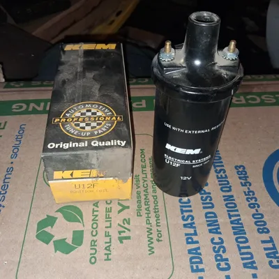
Ignition Coil
1950-1974 KEM Tune-Up Products U12F Ignition Coil Ford Country Sedan Country NOS
U12F
Fits 1957-1974 Mercury Colony Park · 1960-1974 Mercury Comet (1751 listed)
$24.99
View details135 parts whose listing names at least one Mercury vehicle, mostly engine parts, ignition & tune-up and brakes & suspension. Fit depends on year, model and engine, so check the full vehicle list on each part page or message us before you buy.
135 parts
Online checkout through Square. Ships from Carbondale, PA, or pick up by confirmed appointment only. Fitment question? Message us.

U12F
Fits 1957-1974 Mercury Colony Park · 1960-1974 Mercury Comet (1751 listed)
$24.99
View details
TV84
Fits 1960-1974 Mercury Comet · 1968-1974 Mercury Montego (2329 listed)
$16.99
View details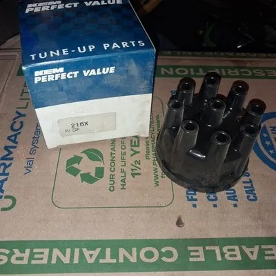
216X
Fits 1957-1974 Mercury Monterey · 1957-1974 Mercury Colony Park (2996 listed)
$24.99
View details
215X
Fits 1957-1974 Mercury Colony Park · 1962-1976 Mercury Comet (2077 listed)
$12.99
View details
DS113
Fits 1959 Mercury Colony Park · 1959 Mercury Commuter (1971 listed)
$21.99
View details
219X
Fits 1960-1976 Mercury Comet · 1961-1963 Mercury Meteor (1820 listed)
$12.99
View details
W8
Fits 1971-1974 Mercury Capri · 1971-1979 Volkswagen Beetle (742 listed)
$21.99
View details
U12GX
Fits 1975-1986 Mercury Capri · 1975-1986 Ford Thunderbird (570 listed)
$24.99
View details
229X
Fits 1977-1984 Mercury Capri · 1977-1980 Mercury Bobcat (537 listed)
$12.99
View details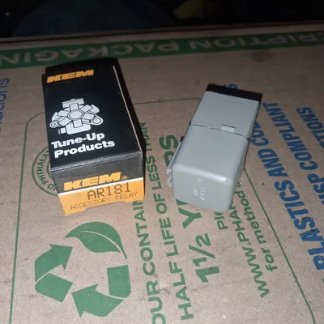
AR181
Fits 1980-1986 Mercury Marquis · 1981-1991 Ford Bronco (983 listed)
$12.99
View details
SW95AX
Fits 1987-1989 Mercury Grand Marquis · 1985-1990 Dodge D150 (1304 listed)
$24.99
View details
E315
Fits 1982-1983 Mercury LN7 · 1982-1986 Mercury Lynx (156 listed)
$32.99
View details
257
Fits 1984 Mercury Cougar · 1984 Mercury Grand Marquis (808 listed)
$12.99
View details
LX218T
Fits 1983-1986 Mercury Capri · 1987-1991 Mercury Colony Park (2372 listed)
$35.99
View details
269
Fits 1984-1986 Mercury Capri · 1985-1995 Mercury Cougar (1848 listed)
$12.99
View details
139-101
Fits 1986-1995 Mercury Cougar · 1986-1994 Mercury Grand Marquis (2927 listed)
$17.99
View details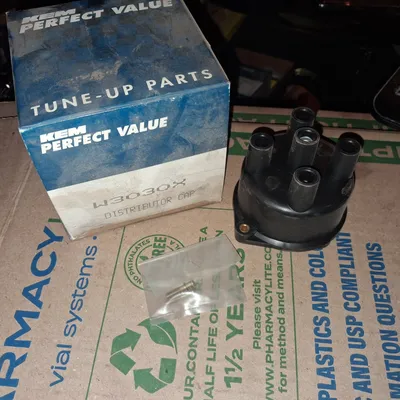
W3030X
Fits 1988-1990 Mercury Tracer · 1986-1989 Mazda 323 (36 listed)
$16.99
View details
W2012X
Fits 1987-1989 Mercury Tracer · 1986-1989 Mazda 323 (47 listed)
$19.99
View details
W2011
Fits 1991-1994 Mercury Capri · 1989-1992 Ford Probe (98 listed)
$14.99
View details
141-220
Fits 1987 Mercury Lynx · 1988-1991 Ford E-250 Econoline Club Wagon (385 listed)
$39.99
View details
W2028
Fits 1991-1994 Mercury Capri · 1988-1989 Ford Festiva (57 listed)
$25.99
View details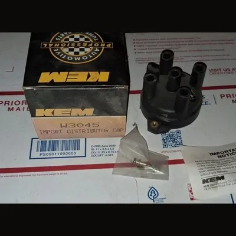
W3045
Fits 1991-1996 Mercury Tracer · 1991-1996 Ford Escort (141 listed)
$14.99
View details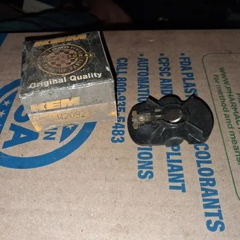
W2092
Fits 1991-1996 Mercury Tracer · 1994-1997 Kia Sephia (191 listed)
$14.99
View details
TW42
Fits 1976 Mercury Bobcat · 1985-1986 Mercury Capri (1707 listed)
$18.99
View details
TF-218
Fits 1982-1986 Mercury Capri · 1982-1986 Mercury Cougar (529 listed)
$29.99
View details
8729
Fits 1993-1996 Mercury Villager · 1993-1998 Nissan Quest (113 listed)
$15.99
View details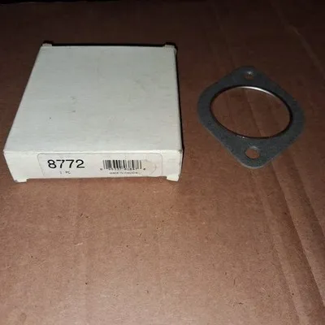
8772
Fits 1979-1989 Mercury Grand Marquis · 1990-1991 Ford LTD Crown Victoria (30 listed)
$17.99
View details
E140
Fits 1966-1974 Mercury Comet · 1968-1974 Mercury Montego (631 listed)
$23.99
View details
DOAF-11001-A
Fits 1970 Mercury Cougar · 1970 Ford Mustang (83 listed)
$89.99
View details
045-0253
Fits 1991-1996 Mercury Tracer · 1983-1985 Toyota Corolla (78 listed)
$12.99
View details
045-0259
Fits 1993-1998 Mercury Villager · 1985-1994 Nissan Maxima (89 listed)
$12.99
View details
1-7353
Fits 1991-1999 Mercury Tracer · 1991-2003 Ford Escort (185 listed)
$29.99
View details
1M-7478
Fits 1993-1997 Mercury Cougar · 1994-1998 Ford Mustang (80 listed)
$24.99
View details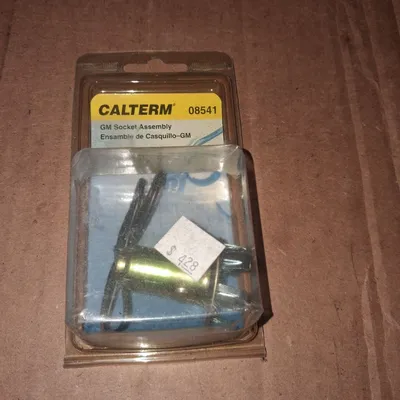
08541
Fits 1977 Mercury Cougar · 1976-1980 AMC Pacer (552 listed)
$14.99
View details
10-1518
Fits 1987 Mercury Colony Park · 1979-1987 Mercury Grand Marquis (564 listed)
$28.99
View details
14082
Fits 1993-1997 Mercury Cougar · 1993-2005 Mercury Sable (2063 listed)
$12.99
View details
H2545
Fits 1967 Mercury Brougham · 1965-1968 Mercury Montclair (3000 listed)
$12.99
View details
H4090-2
Fits 1972-1975 Mercury Comet · 1972-1975 Mercury Cougar (1860 listed)
$12.99
View details
H2108
Fits 1971-1977 Mercury Capri · 1978-1980 Audi 5000 (3000 listed)
$12.99
View details
H5064
Fits 1995-1997 Mercury Grand Marquis · 1997-2001 Mercury Mountaineer (3000 listed)
$13.99
View details
H5412
Fits 1975-1980 Mercury Bobcat · 1973-1974 Mercury Colony Park (3000 listed)
$12.99
View details
H5430-2
Fits 1981-1993 Mercury Grand Marquis · 1981-1986 Mercury Marquis (332 listed)
$14.99
View details
H5677Q
Fits 2002-2005 Mercury Mountaineer · 2002-2005 Ford Explorer (235 listed)
$12.99
View details
H5774Q
Fits 2004-2007 Mercury Monterey · 2004-2016 Chevrolet Tornado (28 listed)
$15.99
View details
H7002
Fits 1996-2002 Mercury Grand Marquis · 1996-2002 Ford Crown Victoria (253 listed)
$13.99
View details
H7297
Fits 1997-1999 Mercury Tracer · 1997-2003 Ford Escort (49 listed)
$12.99
View details
H7302
Fits 2003-2011 Mercury Grand Marquis · 2003-2004 Mercury Marauder (884 listed)
$20.99
View details
7200
Fits 1989-1996 Mercury Cougar · 1992-2001 Mercury Sable (268 listed)
$14.99
View details
Victor 47529
Fits 1974-1979 Mercury Cougar · 1978-1986 Ford Bronco (693 listed)
$17.99
View details
2346
Fits 1979-1986 Mercury Capri · 1984-1988 Mercury Cougar (649 listed)
$139.99
View details
XL2Z7A098DA
Fits 1999-2001 Mercury Mountaineer · 1999-2001 Ford Explorer (430 listed)
$27.99
View details
3L5E-AE
Fits 2005-2011 Mercury Grand Marquis · 2004-2010 Mercury Mountaineer (826 listed)
$39.99
View details
F8AZ-6256-AA
Fits 1994-2011 Mercury Grand Marquis · 1994-2011 Ford Crown Victoria (1628 listed)
$29.99
View details
F8AZ-6256-BA
Fits 1994-2011 Mercury Grand Marquis · 1994-2011 Ford Crown Victoria (1628 listed)
$29.99
View details
CG-20
Fits 1963-1966 Mercury Comet · 1962-1966 Ford Fairlane (182 listed)
$13.99
View details
FV221
Fits 1979-1980 Mercury Capri · 1978-1980 Mercury Zephyr (78 listed)
$13.99
View details
33038
Fits 1957-1966 Mercury Colony Park · 1963-1966 Mercury Marauder (2679 listed)
$19.99
View details
33039
Fits 1957-1966 Mercury Colony Park · 1963-1966 Mercury Marauder (2679 listed)
$12.99
View details
33189
Fits 1994-1997 Mercury Cougar · 1992-2001 Mercury Grand Marquis (510 listed)
$15.99
View details
33209
Fits 1975-1979 Mercury Bobcat · 1972-1979 Mercury Capri (440 listed)
$25.99
View details
33258
Fits 1975-1977 Mercury Bobcat · 1971-1977 Mercury Capri (1572 listed)
$28.99
View details
33478
Fits 1997 Mercury Cougar · 1999 Mercury Sable (1479 listed)
$14.99
View details
33479
Fits 1997 Mercury Cougar · 1999 Mercury Sable (817 listed)
$15.99
View details
33488
Fits 1991-1994 Mercury Capri · 1987-1996 Mercury Tracer (1600 listed)
$26.99
View details
33489
Fits 1991-1994 Mercury Capri · 1987-1996 Mercury Tracer (1658 listed)
$25.99
View details
DR374
Fits 1986-1991 Mercury Grand Marquis · 1988-1996 Ford Bronco (429 listed)
$20.99
View details
245X
Fits 1983-1986 Mercury Capri · 1984-1985 Mercury Cougar (623 listed)
$19.99
View details
247X
Fits 1983-1986 Mercury Capri · 1984-1986 Mercury Cougar (585 listed)
$19.99
View details
E312
Fits 1980-1981 Mercury Grand Marquis · 1980-1981 Mercury Marquis (454 listed)
$27.99
View details
E319
Fits 1983-1991 Mercury Grand Marquis · 1986-1995 Mercury Sable (2935 listed)
$19.99
View details
E322X
Fits 1987 Mercury Lynx · 1987-1988 Ford EXP (35 listed)
$49.99
View details
KVR202B
Fits 1967-1988 Mercury Cougar · 1975-1991 Mercury Grand Marquis (2855 listed)
$29.99
View details
KVR202BX
Fits 1967-1973 Mercury Cougar · 1965-1983 Ford F-100 (3000 listed)
$34.99
View details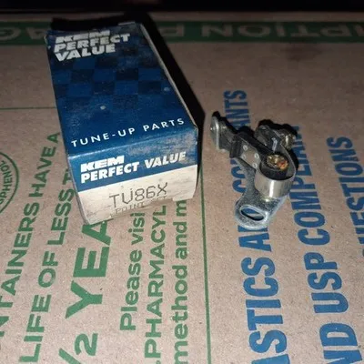
TV86X
Fits 1957-1962 Mercury Colony Park · 1957-1962 Mercury Commuter (601 listed)
$24.99
View details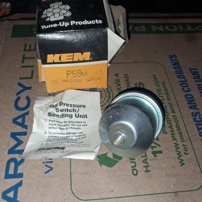
PS90
Fits 1967-1981 Mercury Cougar · 1966-1988 Ford Bronco (1356 listed)
$34.99
View details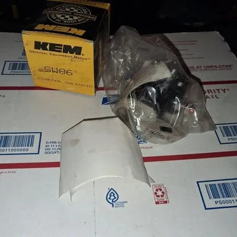
SW86
Fits 1979 Mercury Capri · 1976-1977 Mercury Comet (2011 listed)
$29.99
View details
780038
Fits 1982-1983 Mercury LN7 · 1981-1987 Mercury Lynx (265 listed)
$52.99
View details
7166
Fits 1981-1987 Mercury Lynx · 1984-1994 Mercury Topaz (510 listed)
$25.99
View details
7200
Fits 1992-2001 Mercury Sable · 1989-1996 Mercury Cougar (268 listed)
$20.99
View details
CV7451
Fits 1993-1994 Mercury Sable · 1993-1994 Mercury Topaz (60 listed)
$24.99
View details
CV8448
Fits 1986-1994 Mercury Sable · 1995-1997 Mercury Mystique (278 listed)
$22.99
View details
ASF-42C
Fits 1980-1985 Mercury Capri · 1980-1993 Mercury Cougar (744 listed)
$19.99
View details
RR-21
Fits 1985-1987 Mercury Lynx · 1988-1989 Mercury Tracer (185 listed)
$17.99
View details
3214
Fits 1976-1980 Mercury Bobcat · 1979-1983 Mercury Capri (813 listed)
$15.99
View details
3622
Fits 1981-2002 Mercury Cougar · 1981-1987 Mercury Lynx (1071 listed)
$17.99
View details
PT212
Fits 1984-1997 Mercury · 1984-1997 Ford F-150 (11 listed)
$39.99
View details
61315
Fits 1999-2002 Mercury Cougar · 1998-2000 Mercury Mystique (46 listed)
$12.99
View details
66935
Fits 2008-2009 Mercury Sable · 2007-2014 Ford Edge (263 listed)
$18.99
View details
BH177238
Fits 1987-1990 Mercury Colony Park · 1980-1990 Mercury Grand Marquis (354 listed)
$19.99
View details
BH177239
Fits 1987-1991 Mercury Colony Park · 1980-1994 Mercury Grand Marquis (421 listed)
$15.99
View details
BH177432
Fits 1982-1983 Mercury LN7 · 1981-1987 Mercury Lynx (509 listed)
$19.99
View details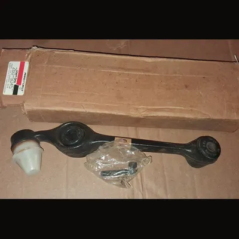
260-5045
Fits 1985-1994 Mercury Topaz · 1993-1994 Ford Tempo (93 listed)
$24.99
View details
269-2465
Fits 1987-1991 Mercury Colony Park · 1979-2002 Mercury Grand Marquis (604 listed)
$14.99
View details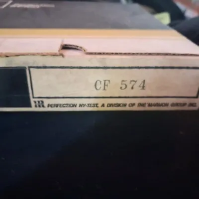
CF574
Fits 1963-1976 Mercury Comet · 1967-1968 Mercury Cougar (457 listed)
$89.99
View details
MV-1231
Fits 1948-1953 Mercury · 1948-1953 Ford (4 listed)
$29.99
View details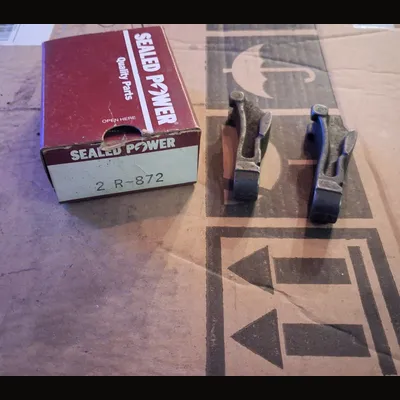
R-872
Fits 1971-1974 Mercury Capri · 1971-1974 Ford Pinto (27 listed)
$19.99
View details
V-358
Fits 1939-1947 Mercury · 1939-1947 Ford
$18.99
View details
40706
Fits 1963-1969 Mercury Comet · 1967-1969 Mercury Cougar (273 listed)
$19.99
View details
DR-323
Fits 1982-1985 Mercury Cougar · 1982-1985 Ford Mustang (841 listed)
$13.99
View details
FD303
Fits 1981-1986 Mercury Lynx · 1981-1986 Ford Escort (502 listed)
$12.99
View details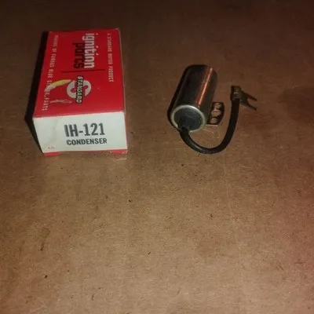
IH121
Fits 1963 Mercury Meteor · 1953-1964 Ford F-100 (1181 listed)
$17.99
View details
JR122T
Fits 1987-1989 Mercury Tracer · 1987-1991 Subaru Justy (50 listed)
$18.99
View details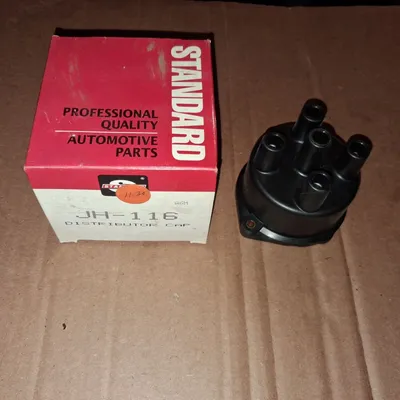
JH-116
Fits 1987-1990 Mercury Tracer · 1986-1989 Mazda 323 (41 listed)
$14.99
View details
PS-149
Fits 1967-1979 Mercury Cougar · 1966-1996 Ford Bronco (681 listed)
$17.99
View details
V201
Fits 1979-1991 Mercury Grand Marquis · 1980-1993 Ford Mustang (237 listed)
$14.99
View details
V227
Fits 1979 Mercury Capri · 1981-1986 GMC G2500 (30 listed)
$16.99
View details
V237
Fits 1984-1986 Mercury Cougar · 1985-1989 Mercury Topaz (240 listed)
$16.99
View details
V241
Fits 1986-1987 Mercury Topaz · 1989-1990 Mercury Cougar (63 listed)
$16.99
View details
V244
Fits 1991-1992 Mercury Tracer · 1985-1992 Ford Escort (67 listed)
$14.99
View details
V264
Fits 1988-1991 Mercury Topaz · 1988-1991 Ford Tempo (90 listed)
$14.99
View details
V268
Fits 1986-1995 Mercury Sable · 1986-1995 Ford Taurus (220 listed)
$14.99
View details
VR166T
Fits 1967-1968 Mercury Cougar · 1986-1989 Ford Aerostar (236 listed)
$33.99
View details
8204
Fits 1995-1999 Mercury Sable · 1995-1999 Ford Taurus (104 listed)
$64.99
View details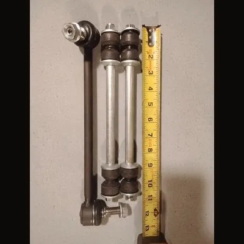
Fits 1995-2005 Mercury Sable · 1995-2007 Ford Taurus (234 listed)
$39.99
View details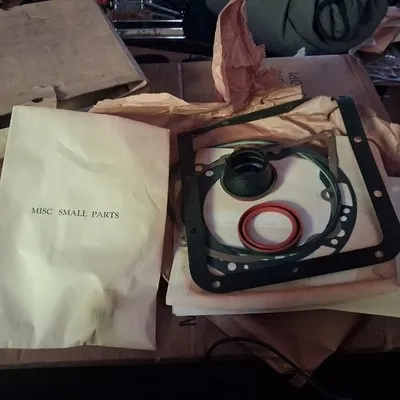
4A82F
Fits 1975-1979 Mercury Bobcat · 1964-1977 Mercury Comet (1881 listed)
$79.99
View details
4A-93F
Fits 1975-1979 Mercury Bobcat · 1971-1977 Mercury Comet (1134 listed)
$79.99
View details
JV555
Fits 1986-2005 Mercury Sable · 1986-2007 Ford Taurus (428 listed)
$25.99
View details
JV1032
Fits 1986-1994 Mercury Sable · 1986-1994 Ford Aerostar (208 listed)
$41.99
View details
BD61355
Fits 1993-1994 Mercury Villager · 1984-1988 Nissan 200SX (46 listed)
$24.99
View details
BD61992
Fits 1995-1996 Mercury Tracer · 1995-1996 Ford Escort (7 listed)
$24.99
View details
F112365
Fits 1986-1992 Mercury Sable · 1986-1992 Ford Taurus (155 listed)
$14.99
View details
MKD466
Fits 1991-1994 Mercury Tracer · 1994-1997 Ford Aspire (124 listed)
$24.99
View details
F967
Fits 1983-1986 Mercury Capri · 1981-1986 Mercury Lynx (402 listed)
$12.99
View details
F968
Fits 1983-1986 Mercury Capri · 1984-1986 Mercury Cougar (634 listed)
$22.99
View details
33023
Fits 1999-2002 Mercury Villager · 1991-1996 INFINITI G20 (506 listed)
$20.99
View details
33049
Fits 1978 Mercury Bobcat · 1977-1978 Mercury Cougar (374 listed)
$12.99
View details
33293
Fits 1997-1999 Mercury Tracer · 1989-1991 Mercury Cougar (74 listed)
$18.99
View details
46023
Fits 2004-2008 Mercury Sable · 2004-2008 Ford Ranger (5 listed)
$29.99
View details
46047
Fits 1983-1984 Mercury Capri · 1984-1986 Mercury Cougar (183 listed)
$27.99
View details
46097
Fits 1992-1997 Mercury Tracer · 1991-1997 Ford Escort (137 listed)
$25.99
View details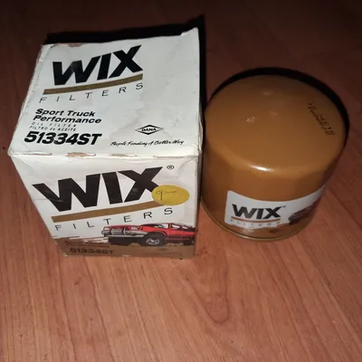
51334ST
Fits 1987-1990 Mercury Tracer · 1997-2002 Acura CL (149 listed)
$21.99
View details
51347
Fits 1975-1979 Mercury Bobcat · 1972-1982 Ford Courier (121 listed)
$13.99
View details
51356
Fits 1999-2000 Mercury Villager · 2001-2005 Chrysler Sebring (6 listed)
$14.99
View details
51361
Fits 1993-1998 Mercury Villager · 1993-1997 INFINITI J30 (49 listed)
$16.99
View details
51372
Fits 1991-2017 Mercury · 1996-2001 Ford F-100 Ranger (11 listed)
$13.99
View details